Features
Full feature inventory, ranked for developers who manage multiple Firebase apps across emulator, development, and production environments.
Screenshots
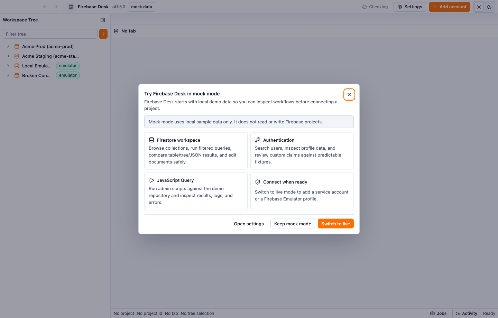
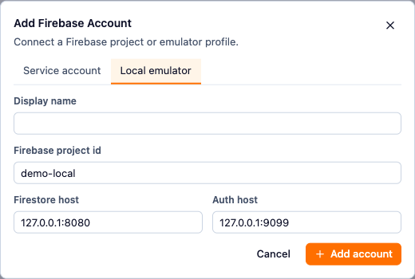

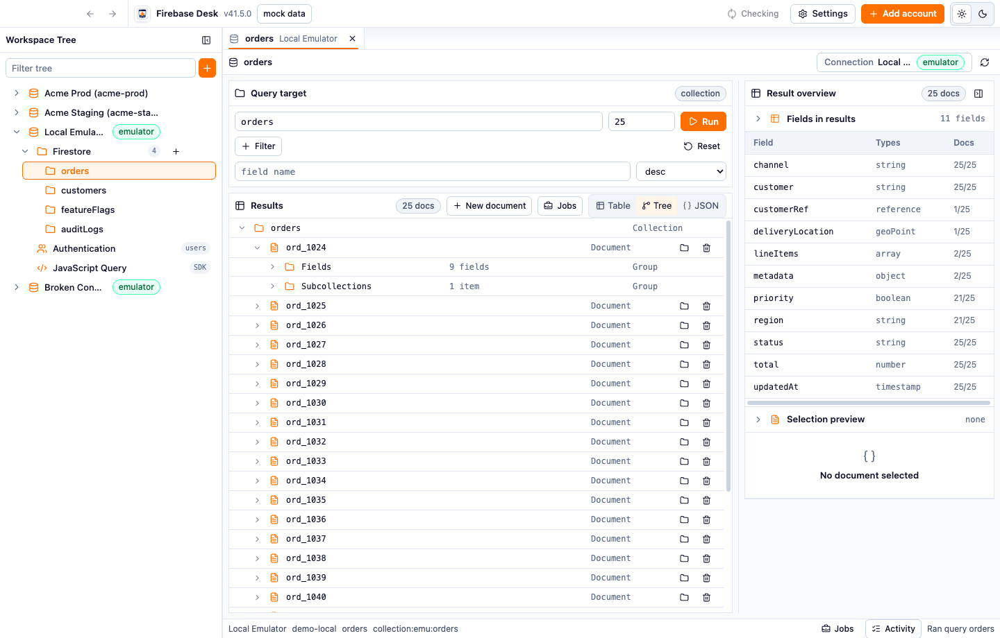
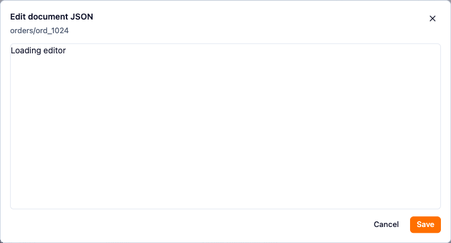
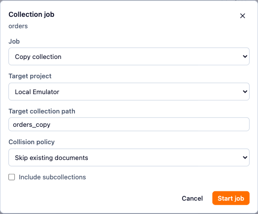
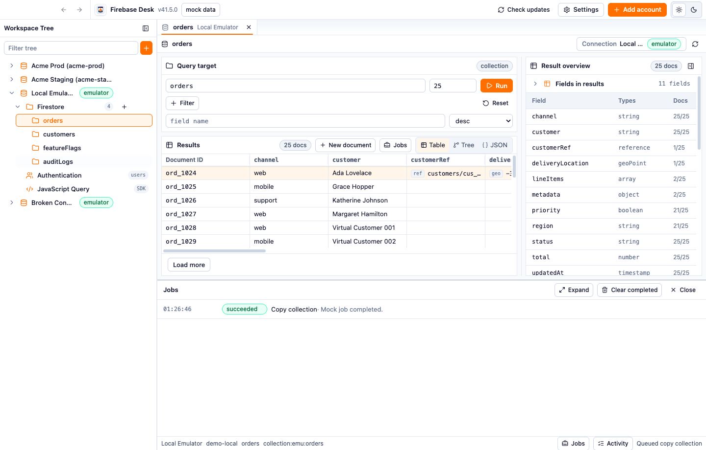
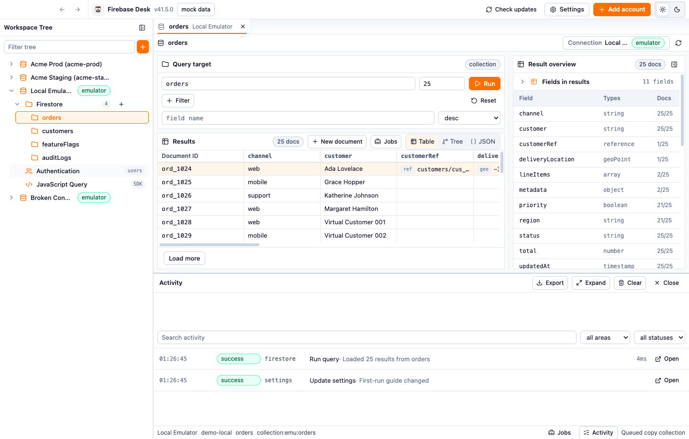
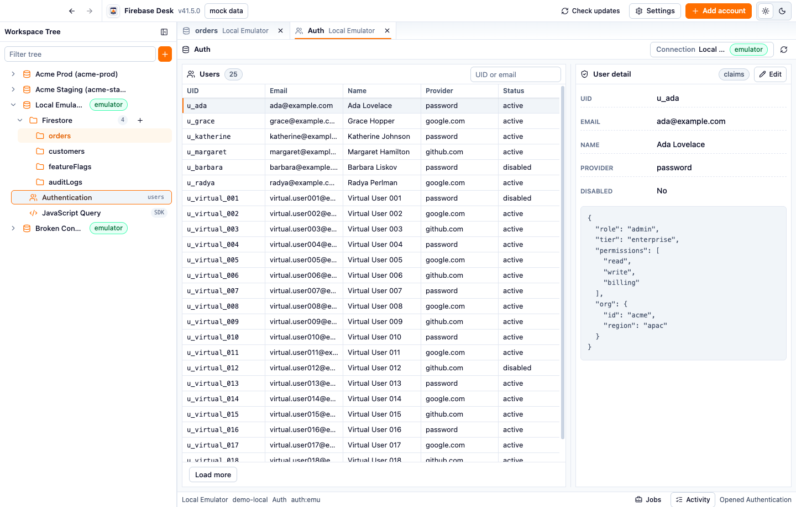
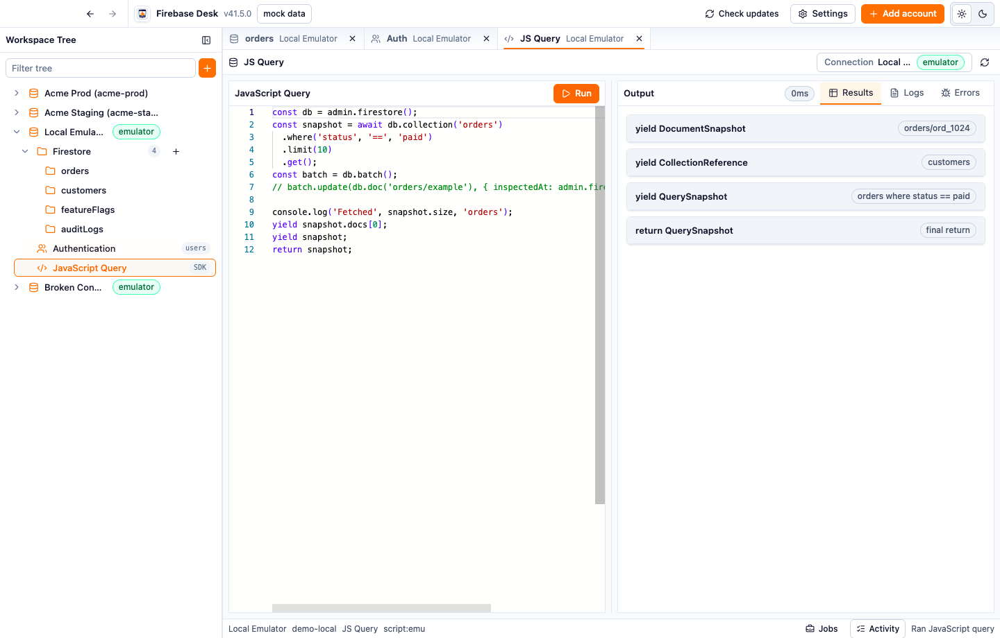
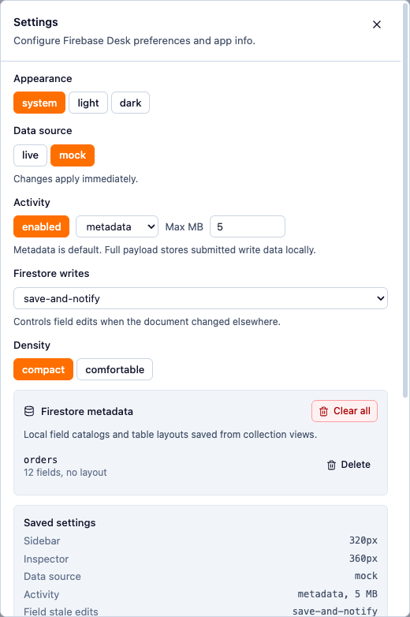
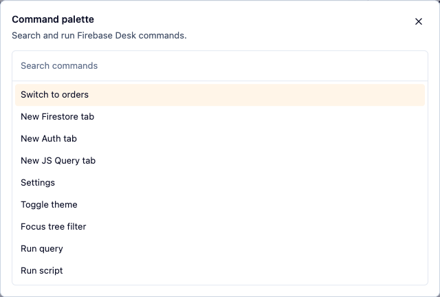
Top 15
-
Mock mode and first-run guide
Fresh installs open against local demo data. The first-run guide explains what mock mode can do, points users at Firestore, Authentication, JavaScript Query, jobs, and activity, then lets them stay in mock mode or move toward a real connection. While mock mode is active, the header keeps a visible mock data button so users can reopen the guide and find the path to real mode.
-
Dev, emulator, and production account targeting
Firebase Desk can hold multiple Firebase accounts, including service-account projects and local emulator profiles. That matters when the same app has development and production Firebase projects: the workspace shows the active account, project ID, emulator badges, mock/live mode, and per-tab connection so writes are made against the intended target.
-
Account tree for project navigation
The sidebar groups each account by Firestore, Authentication, and JavaScript Query. Firestore roots load into an expandable tree with filter, loading, empty, and error states. Tree rows expose refresh, account edit/remove, new collection, new document, and collection job actions from hover controls or context menus.
-
Tabbed workspace across accounts
Collections, Authentication, and JavaScript Query open as tabs. Tabs can be selected, reordered, closed individually, closed by side, closed except active, closed all at once, sorted by connection, and scrolled when the strip overflows. The active tab can switch connection through the project switcher without leaving the workspace.
-
Firestore query builder
Query any collection path or open a document/nested path. Collection queries support filters, sort field and direction, and limits. Filter values are parsed as JSON when possible, so strings, numbers, booleans, arrays, objects, and null can be queried with Firestore operators such as equality, range, membership, and array containment.
-
Three Firestore result views
Results can be inspected as a table, tree, or JSON. The table is best for scanning many documents, the tree is best for exploring nested fields and subcollections, and JSON is best for exact payload review. Results include loading, error, stale refresh, empty, and load-more states.
-
Firestore table productivity
The table includes Document ID, discovered fields, and subcollection indicators. Users can select rows, double-click into document editing, resize and reorder columns, reset layout, load more results, and keep saved table layouts locally. Dense and comfortable table density modes support both compact admin scanning and relaxed review.
-
Document and field editing
Users can create documents with generated or explicit IDs, edit full document JSON, or edit individual fields. Field editing covers primitive Firebase values such as boolean, number, string, null, timestamp, reference, bytes, and geo point, with arrays and maps handled through JSON editing. Field menus also support copy field path, copy value, set null, and delete field.
-
Stale write and conflict handling
Firestore writes track document update state. Full-document conflicts can open a merge dialog with the remote document and an editable merge draft. Field-level stale writes follow the configured behavior: save and notify, ask for confirmation, or block the write.
-
Subcollection discovery and navigation
Firestore rows and tree results expose loaded subcollections. Users can load subcollections lazily, open documents in new tabs, open subcollection paths, and choose loaded subcollections when deleting a document. Delete dialogs warn when subcollections may remain outside the loaded set.
-
Collection jobs for data movement
Collection jobs cover copy, duplicate, export, import, and delete. Copy can target a different configured project, which is useful for dev-to-prod or prod-to-dev data moves. Jobs support collision policies, optional subcollections, JSONL or CSV export, importable encoded JSONL, file pickers, and confirmations for overwrite or delete.
-
Authentication user admin
Authentication tabs list users with UID, email, display name, provider, and disabled status. Users can filter by UID or email, load more results, inspect profile details, review custom claims as JSON, and edit custom claims with JSON validation and unsaved change protection.
-
JavaScript Query workbench
JavaScript Query runs trusted scripts in the selected Firebase Admin context with globals for Admin SDK, Firestore, Auth, and project metadata. Scripts can return values, yield intermediate results, write console logs, fail with visible errors, and be cancelled while running. Firestore results returned by scripts use the same table, tree, and JSON browser.
-
Jobs, activity, and status visibility
Long-running collection work appears in the Jobs drawer with status badges, progress bars, read/write/delete/skip/fail counts, current path, file path, request JSON, cancel, and clear-completed actions. The Activity drawer records app, Firestore, Auth, script, and job actions with search, area/status filters, export, clear, target-open links, duration, metadata, payload, and errors.
-
Local settings and workspace persistence
Settings cover theme, density, mock/live data mode, activity logging, activity detail, retention, Firestore stale-write behavior, saved field catalogs, saved table layouts, local data folder access, credential storage status, version, license, and hotkey override plumbing. Workspace state is kept locally so repeated admin work resumes predictably.
Feature Inventory
The list below expands the ranked features into the smaller controls and states that ship with the app.
Onboarding and modes
- Mock mode uses local fixtures only.
- Fresh installs default to mock mode.
- First-run guide explains mock mode and core surfaces.
- Persistent mock-mode header button reopens the guide.
- Settings can switch between mock and live data sources.
- Header shows mock data or live state.
- Mock data covers Firestore, Authentication, JavaScript Query, jobs, and activity.
Accounts and environments
- Add service-account projects from a JSON file picker.
- Add service-account projects by pasting JSON.
- Validate service-account JSON for required project and client fields.
- Add local emulator profiles with display name, project ID, Firestore host, and Auth host.
- Edit account display name.
- Edit emulator project ID and hosts.
- Show production project ID as read-only in account editing.
- Show credential storage summary in settings.
- Warn when credentials are stored without OS encryption support.
- Remove configured accounts.
- Show emulator badges in workspace navigation.
- Show active account and project ID in the status bar.
Workspace and navigation
- Resizable sidebar with persisted width.
- Account tree filter.
- Virtualized account tree.
- Expandable project and Firestore nodes.
- Tree loading, empty, and error rows.
- Tree actions for add project, edit account, remove account, refresh, new collection, and new document.
- Collection context menu actions for copy, duplicate, export, import, and delete jobs.
- Tabs for Firestore collections/documents, Authentication users, and JavaScript Query.
- Drag reorder tabs.
- Close tab, close other tabs, close tabs to left, close tabs to right, and close all tabs.
- Sort tabs by connection.
- Horizontal tab overflow controls.
- Per-tab project label.
- Connection switcher for the active tab.
- Refresh active tab action.
- Back and forward navigation buttons.
- Command palette for tab switching, new tabs, settings, theme toggle, tree filter, run query, and run script.
- Keyboard shortcuts for command palette, new tab, close tab, history, settings, tree filter, and run actions.
- Render error boundary around workspace views.
Firestore querying and result review
- Query collection paths.
- Open document and nested document paths.
- Collection filters with equality, inequality, range, array, in, and not-in operators.
- JSON parsing for filter values.
- Sort by field and direction.
- Field autocomplete from discovered field catalogs.
- Configurable query limit with guardrails.
- Reset query draft with confirmation.
- Run query button and run hotkey.
- Refresh stale results.
- Load more paginated results.
- Table result view.
- Tree result view.
- JSON result view.
- Selected document overview panel.
- Resizable result overview panel with persisted width.
- Collapsible result overview strip.
- Document ID and field columns in table view.
- Subcollection column in table view.
- Column resize, reorder, reset, and saved layouts.
- Field overflow handling when result sets contain many fields.
- Row selection and double-click document editing.
- Tree expansion for nested values.
- Show-more control for large nested values.
- Lazy load subcollections from tree and document views.
- Open documents and subcollection paths in new tabs.
Firestore editing
- Create documents from query results or tree actions.
- Create documents in an editable collection path.
- Generate document IDs.
- Validate document JSON before save.
- Protect unsaved document creation changes.
- Edit full document JSON.
- Protect unsaved full-document edits.
- Edit individual fields.
- Edit boolean, number, string, null, timestamp, reference, bytes, and geo point values.
- Edit arrays and maps with JSON input.
- Set fields to null.
- Delete fields.
- Copy field paths.
- Copy field values.
- Delete documents.
- Choose loaded subcollections for descendant deletion.
- Warn when deleting documents that may have unloaded subcollections.
- Detect stale full-document saves.
- Merge conflicting full-document saves.
- Configure field-level stale write behavior: save and notify, confirm, or block.
- Show write, conflict, and error feedback in the surface and activity log.
Collection jobs
- Copy collections to another configured project.
- Duplicate collections inside the active project.
- Export collections to JSONL.
- Export collections to CSV.
- Choose encoded JSONL for Firebase Desk import.
- Choose plain JSONL for export-only review.
- Import collections from a chosen file.
- Delete collections.
- Include subcollections for copy, duplicate, export, and delete.
- Choose target collection path.
- Choose target project for copy.
- Choose collision policy: skip, overwrite, or fail.
- Confirm destructive delete and overwrite operations.
- Choose import and export file paths through native file pickers.
- Track background job progress in the Jobs drawer.
Authentication
- Open Authentication users per project.
- List users with UID, email, name, provider, and status.
- Filter users by UID or email.
- Load more users when more pages are available.
- Show user loading, empty, and error states.
- Select users from the table.
- Inspect UID, email, name, provider, and disabled state.
- Preview custom claims as JSON.
- Edit custom claims as JSON.
- Validate custom claims are a JSON object.
- Protect unsaved custom-claim edits.
- Record Authentication loads, searches, pagination, and claim saves in activity.
JavaScript Query
- Open a JavaScript Query tab per project.
- Run trusted JavaScript against the selected Firebase Admin SDK context.
- Cancel a running script.
- Use Admin SDK, Firestore, Auth, and project globals.
- Use editor type helpers for common Admin SDK Firestore and Auth APIs.
- Start from a sample script.
- Return values from scripts.
- Yield intermediate stream items from scripts.
- Write console logs from scripts.
- View results, logs, and errors in separate output tabs.
- Show duration and cancelled state.
- Preview returned Firestore documents and query snapshots with the Firestore result browser.
- Keep prior output visible while logs and errors are reviewed.
Jobs, activity, and status
- Jobs drawer with queued, running, succeeded, failed, interrupted, and cancelled states.
- Job progress bars.
- Job read, written, deleted, skipped, failed, and total counts.
- Current path display for active jobs.
- Output file path display for file jobs.
- Request JSON display for job debugging.
- Cancel active jobs.
- Clear completed jobs.
- Activity drawer with app, Firestore, Auth, script, and job entries.
- Activity search.
- Activity area filter.
- Activity status filter.
- Activity export.
- Activity clear.
- Activity expand and collapse.
- Open target links for supported activity entries.
- Activity details for target, error, metadata, and payload.
- Large activity JSON preview truncation.
- Status bar with active project, project ID, tab title, tree selection, Jobs badge, Activity badge, and last action.
Settings and local state
- System, light, and dark theme settings.
- Header theme toggle for light and dark.
- Compact and comfortable density settings.
- Mock/live data source setting.
- Activity logging enablement.
- Activity detail level setting.
- Activity retention size setting.
- Firestore field stale-write behavior setting.
- Saved Firestore field catalogs.
- Saved Firestore table layouts.
- Delete individual saved metadata entries.
- Clear saved Firestore metadata.
- Local data folder display and open-location action.
- Credential storage status.
- App version, license, and about details.
- Hotkey override storage plumbing and override count display.
- Workspace state persistence.
Updates, safety, and release UX
- Manual check-for-updates button.
- Automatic update checks no more than once per day when due.
- Update-available notice.
- Update-failed notice.
- Open release action.
- Retry update check action.
- Dismiss update notice with dismissed version saved.
- Explicit confirmations for destructive deletes and overwrites.
- Visible loading, empty, and error states throughout core surfaces.
- Local settings storage.
- Secure credential storage when the operating system supports it.
- Responsive split layouts for Firestore, Authentication, and JavaScript Query.
- Keyboard-accessible buttons, menus, dialogs, drawers, and tabs through shared UI primitives.